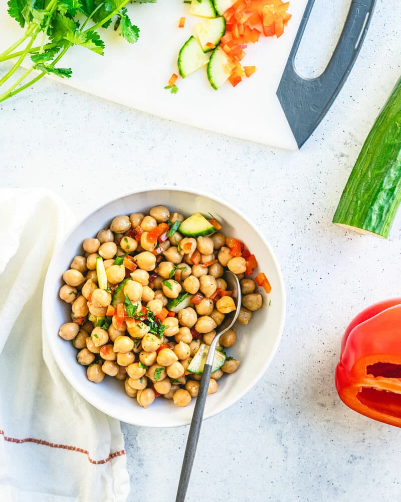

Back to all recipes
Chickpea Salad

A 5-minute fast lunch idea! This simple chickpea salad is easy to throw together: the perfect healthy plant based desk lunch or quick fix dinner.
Ingredients
- 15-ounce can chickpeas (or 1 ½ cups cooked)
- ¼ cup bell pepper, diced
- ¼ cup English cucumber, chopped
- ½ tablespoon olive oil
- ½ tablespoon red wine vinegar
- ½ teaspoon kosher salt
- ½ teaspoon smoked paprika
- Fresh ground pepper
- 1 pinch celery seed or fresh torn herbs (parsley, dill, basil, etc), optional
Steps
- Drain and rinse the chickpeas.
- Dice the bell pepper. Chop the cucumber (peel it if you’re using a standard cucumber; English cucumber doesn’t need to be peeled).
- In a bowl, mix together all ingredients. Taste and add salt as desired.